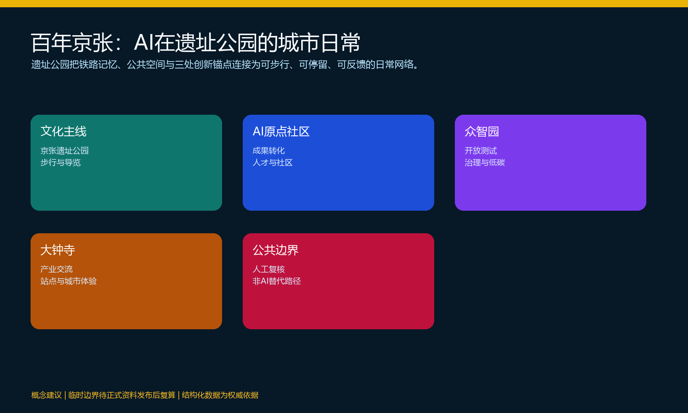
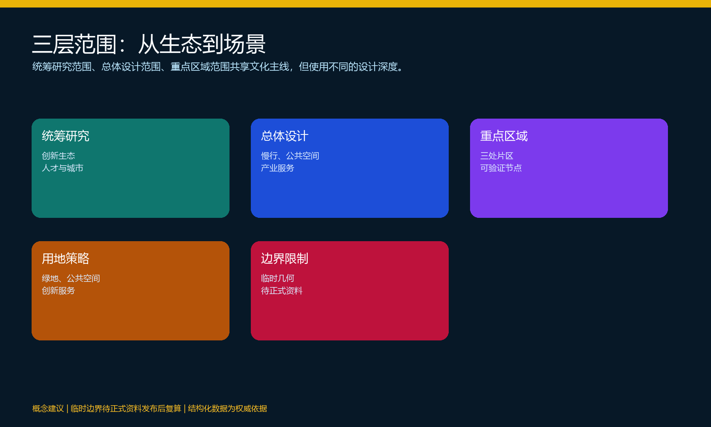
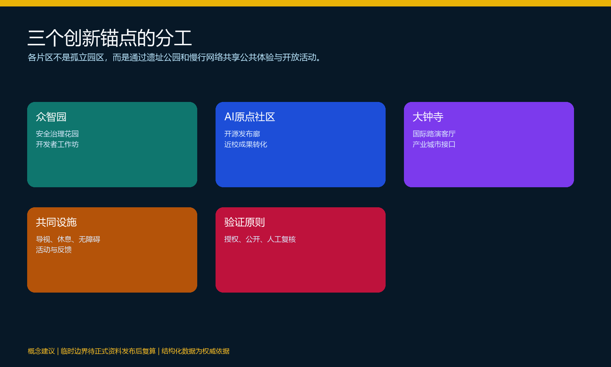
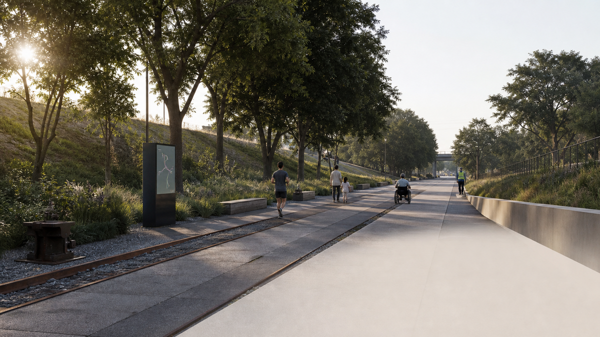
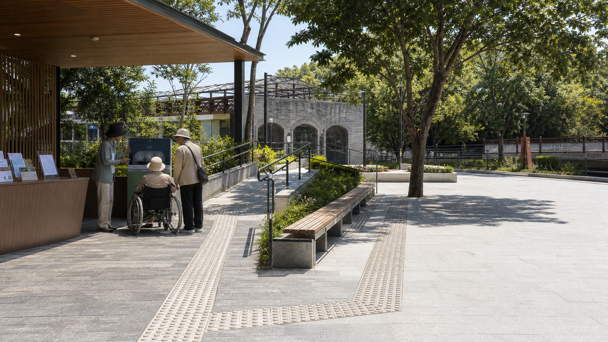
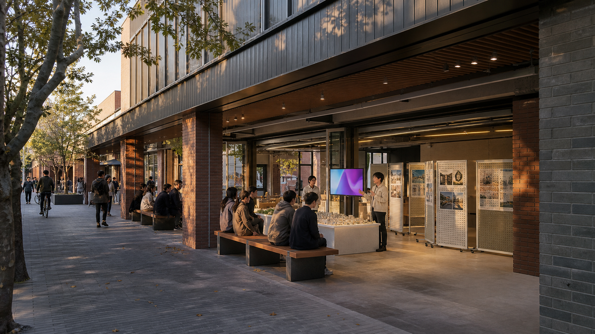
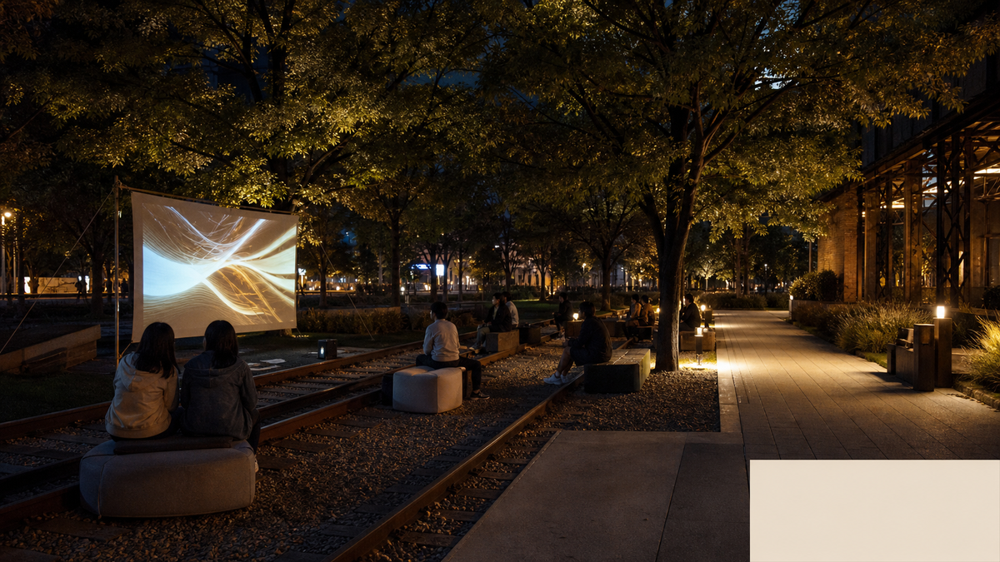
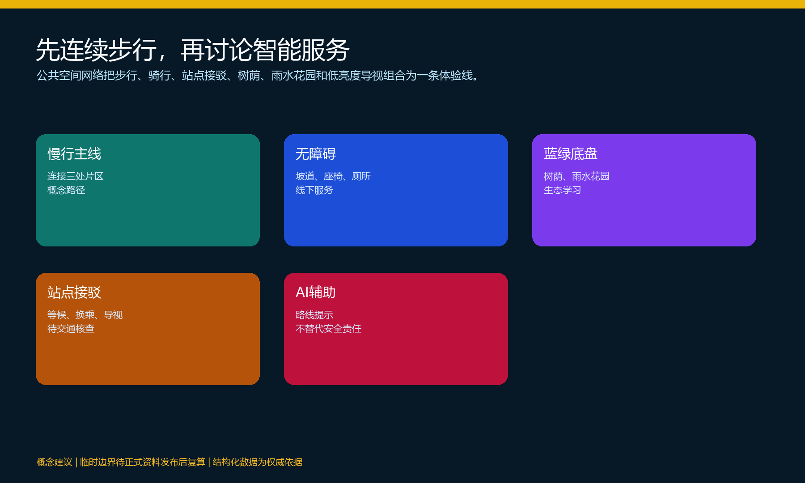
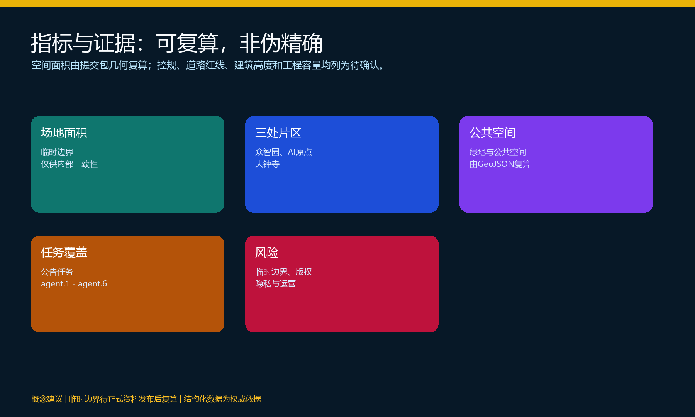

百年京张：AI在遗址公园的城市日常
以京张遗址公园为公共体验主线，连接北京AI原点社区、众智园AI自主创新加速区与大钟寺AI产业集群；用可步行、可停留、可反馈的AI场景，让技术进入城市日常。
百年京张：AI在遗址公园的城市日常
设计依据与资料清单
本方案从“铁路如何把远方带到北京”的历史经验出发，讨论AI如何以公共、克制和可被人理解的方式进入遗址公园、街道和社区日常。方案依据征集公告、面向智能体任务书、场地包、来源登记表和标准快照组织；设计判断由文本、GeoJSON、指标和矩阵共同支撑，而不是由效果图单独证明。来源 来源 来源
当前仓库尚未提供正式场地红线和三处重点区域精确多边形，提交包采用维护者登记的临时粗略边界。它们只用于概念生成、展示与自检，不能作为审批、权属、道路红线、精确面积或工程结论的依据；取得正式资料后，所有设计图层与指标均须重算。空间数据 来源
本版资料清单包含公开公告与任务书、临时边界及其推导说明、来源使用登记、设计深度矩阵和专业标准矩阵。后续现场踏勘只记录可公开使用的步行观察、无障碍记录、公共空间使用笔记和自行拍摄的无敏感信息图像；每条新增资料均记录时间、地点、方法、许可与限制。

三层范围工作框架
方案按三层范围推进。统筹研究范围用于理解高校、研发机构、产业服务、社区和城市生活如何形成创新生态；总体设计范围用于组织京张遗址公园周边的慢行、公共空间、产业服务和更新项目；重点区域范围用于把抽象愿景拆解为可讨论的空间节点、活动、界面和验证场景。深度 指标
“百年京张”在本方案中不是单一纪念符号，而是一条工作方法：铁路曾把站点、货物、知识和人连接起来，今天可把遗址、公园、校园、研发、社区和站点组织成连续的公共体验。三层范围共享一条文化主线，但各自承担不同设计深度，避免用一个概念替代空间、运营和证据。

统筹研究范围产业与未来城市研究
统筹研究的核心不是预测某一家企业，而是建立“知识产生—开放协作—试验验证—公共理解—持续改进”的城市创新链。高校和研究机构提供知识与人才，开发者社区提供开放协作，企业服务与产业空间提供转化条件，遗址公园和街道提供面向公众的体验与反馈界面。这样的结构让AI不只成为楼宇中的生产工具，也成为城市学习与公共讨论的对象。深度 标准
建议以五种功能共同构成生态：全栈自主创新、世界级创新交流、AI+场景开放、智能化城市活力和面向公共利益的治理讨论。它们分别对应众智园的测试与治理、AI原点社区的成果转化、大钟寺的产业交流，以及中关村科技服务翼、小月河场景赋能翼的资源支持。所有功能均是概念性空间与运营建议，不构成政策、招商或资金承诺。
未来城市的关键不在于增加屏幕，而在于提升可达性、可理解性和选择权。方案要求每项AI服务都提供非AI替代路径、人工解释与退出机制；通过小规模公开活动和匿名反馈来验证体验，而非以个人画像或持续监控作为前提。来源 深度
总体设计范围城市更新与控规深度城市设计
总体设计提出“一条遗址公园生活线、三处创新锚点、两条协同翼、十个可体验节点”。生活线把铁路文化、树荫步道、口袋广场、无障碍休息点和开放活动串联；三处锚点分别承担成果转化、测试治理与产业交流；两条协同翼把高校和科技服务、生态和社区场景纳入同一网络。它不是新增法定道路或红线，而是供专业团队根据正式资料深化的空间组织建议。空间数据 空间数据
更新策略优先处理可以由公共空间改善带来的真实变化：步行中断处、站点周边等候空间、低效或封闭的街道界面、缺乏休息和导视的公园入口，以及校园、园区、社区之间缺少交流的边界。建筑新增、拆改留、容积率、建筑高度和工程容量不在本版作确定结论；缺失条件统一进入假设表，等待官方控规、权属、消防、市政与文保资料核实。深度 深度
总体空间图层以完整用地分区为机器核查基础。图层中的建筑、绿地、公共空间、道路和分期均为概念设计对象，不代表既有现状或审批成果；相邻用地边界以同一几何坐标生成，便于后续替换正式边界时整体复算。空间数据 指标
重点区域详细设计
众智园AI自主创新加速区
众智园建议成为“可观察的测试与治理花园”。在不改变任何法定控制的前提下，概念上以树荫、雨水花园、可预约工作坊和开放说明墙组织开发者活动。公众可以理解模型测试、人工复核和反馈渠道，但不接触未授权模型、企业内部数据或个人信息。临清河界面、慢行接入、产业展示和低碳公共空间均需在现场踏勘后校准。空间数据 深度
北京AI原点社区
AI原点社区建议成为“从校园成果到城市生活的转换器”。开源发布廊、成果展示、社区服务、小型路演和可停留的街道界面共同构成近校创新日常。它服务学生、研究者、创业团队、居民和访问者，重点不是制造封闭科技园，而是让公开、授权的成果有机会被非专业公众理解、试用和反馈。空间数据 深度
大钟寺AI产业集群
大钟寺建议成为“产业交流进入城市体验的接口”。站点周边可通过连续雨棚、口袋广场、可开启的交流空间和多语言导览提升抵达体验；日常可作为等候、休息、展览和社区活动空间，活动期承接公开路演。涉及企业、商业和运营的内容仅为场景建议，不预设企业名单、投资、招租或开业时间。空间数据 深度

AI 创新生态、人才画像与 AI+ 场景
本方案面向五类人：周边居民需要可安心步行、休息和获得服务的空间；创业团队需要低门槛交流与展示入口；开发者和研究人员需要公开协作与测试讨论；国际访问者需要可理解的文化与活动路线；老年人和行动不便者需要连续、清晰、不依赖智能手机的无障碍支持。五类人共享同一公共空间，但不被要求贡献个人数据。
十个AI场景以“辅助而不替代”为原则：京张文化导览、无障碍漫游助手、开源成果发布厅、模型安全治理沙盒、低碳滨水创新廊、开发者共享测试站、近校成果转化街、大钟寺国际路演客厅、AI生活服务样板街、全球AI活动周路线。每张场景卡都明确服务对象、空间载体、公开数据边界、人工复核和非AI替代方式；其中公共空间导视、开放成果展示、活动运营是三项可小规模验证的行业场景。深度 深度
以下六张效果图只用于表达人在空间中的体验，不承担法定范围、面积、工程或审批信息。均为“概念建议 / Conceptual proposal”。






为形成长期品牌资产，建议建立年度“百年京张AI城市日常周”：春季聚焦无障碍与公园体验，夏季聚焦开发者共创与生态观察，秋季聚焦成果发布和国际交流，冬季聚焦治理、复盘与公开反馈。该活动是运营构想，需另行取得场地许可、活动安全审查和合作方确认。
用地、建筑规模与拆改留方案
用地层以公共绿地、公共空间、创新服务、复合产业与必要支撑空间的概念分区表达功能关系。它应完整覆盖临时设计边界，保证机器可以检查面积、重叠和空隙；但不据此宣称具体地块用途、权属或审批性质。空间数据 指标
建筑层只表达可供后续深化的“保留观察、更新激活、界面改善、待确认”四类策略。保留并非文保认定，更新并非拆除决定；任何具体建筑均需由产权、文保、消防、结构、市政和控规资料决定。方案优先倡导首层开放、雨棚遮阴、可达厕所、连续导视和小尺度可变空间，而不以地标体量作为主要竞争手段。深度 深度
交通、轨道、市政与公共服务设施
交通策略以“先让人走得连续，再讨论智能服务”为顺序。重点核查京张遗址公园跨环路节点、五道口与清华东路西口、大钟寺站及重点片区周边的步行断点、骑行停放、等候空间和换乘导视。AI可辅助提供拥挤提示和无障碍路线，但不能替代交通组织、信号控制或安全责任。空间数据 深度
市政与新型基础设施采用“预留接口、分期验证、专业复核”的策略。可在后续阶段讨论公共Wi-Fi、端侧计算、低能耗照明和信息发布，但电力、通信、排水、防洪、消防、地下空间和设备容量必须由专业单位依据正式资料确认。公共服务优先保障饮水、休息、卫生、无障碍、活动疏散和线下咨询，不把数字服务当成唯一入口。深度

蓝绿空间、公共空间与城市风貌
蓝绿系统是本方案的公共底盘。京张遗址公园及其周边绿地不应仅作为背景，而应承载树荫步行、雨水花园、儿童与长者停留、生态学习和开放活动。清河、小月河及相关生态条件在没有正式蓝线和防洪资料前，只作为需要保护和复核的约束信息，不作工程判断。空间数据 空间数据
城市风貌以“铁路材料记忆 + 北京砖色基调 + 可读的数字导视”为方向。视觉系统用平行线、节点编号和低亮度信息面板提示历史、服务和活动，避免把AI误解为巨幅广告、炫目屏幕或全天候监控。写实效果图用于帮助公众理解空间体验，须标注为概念建议，并与平面、轴测、数据和图例共同呈现。标准 深度
更新项目清单、实施政策与分期计划
项目清单按“先公共体验、再空间协同、后专业深化”安排：第一类是遗址公园导视、无障碍休息点、步行断点观察和可移动展陈；第二类是AI原点社区发布廊、众智园治理花园、大钟寺交流客厅等可验证节点；第三类是需要正式资料和多方许可的跨环路联系、站点一体化、滨水界面和建筑更新。每类均须在后续阶段确认责任主体、资金、许可与工程条件。深度
分期建议为：近期以公开观察、文化导览、临时活动和低成本设施建立反馈；中期基于现场数据和专业核查优化公共空间及服务节点；远期由专业团队在正式规划条件下深化建设、运维和评估。分期图层只表达概念推进顺序，不构成政府实施时间表。空间数据 深度
指标体系、面积复算与合规矩阵
本版可复算指标包括临时场地面积、三处重点区域数量、绿地面积、公共空间面积、建筑基底面积和相应比例。指标从 GeoJSON 投影到 EPSG:4548 后计算，并在 metrics.json 记录公式、来源、状态、置信度与假设。临时边界下的面积仅用于方案内部一致性检查，不能作为正式审批或精确统计依据。指标 指标 指标
容积率、建筑高度、建筑密度、道路红线、退线、权属和工程容量均为待确认项，不能以推测数字制造精确感。合规矩阵逐项对应公告任务和 agent.1—agent.6：总体概念与标识、创新生态、AI+场景、公共空间与地标、文化叙事、长期活动与开发者社区。标准矩阵和设计深度矩阵分别记录专业依据与可审查成果。标准 深度

风险、版权与合规说明
本方案的主要风险是临时边界误差、缺失的控规与工程条件、历史图像和字体版权、公共空间活动许可、AI服务中的隐私与偏见，以及后续运营责任不清。所有风险均应显式记录、在资料补齐后复核，不能被渲染图或概念叙事掩盖。深度
所有AI场景遵循数据最小化、用途限定、公开或清权来源、人工复核、可解释和可退出原则。方案不使用非公开政府资料、企业内部资料或个人隐私；不声称获得政府批准、确定投资、确定拆改留、确定工程可行性或确定企业入驻。效果图、图标和文字仅使用自制、公开许可或获授权资产，并在版权说明中登记。
风险控制的空间含义是：临时边界只作为低对比度约束层，不能据此推断道路位置、建筑界面或项目面积；所有面积指标只服务提交包内部的复算一致性。版权控制要求每张效果图、图标和字体在 sources.json 或版权说明中可追溯；隐私控制要求导览、活动和无障碍服务不把个人识别、轨迹追踪或算法评分作为使用前提。待补的控规、道路红线、文保、市政、交通和权属资料决定了哪些建议能够深化，因此在正式资料到位前，方案只表达公共空间意图、验证方法和人工复核边界。空间数据 指标
参考资料
brief/public-brief.mdbrief/site-package/design_brief.jsonbrief/site-package/agent_taskbook.jsonbrief/site-package/allowed_design_space.jsonbrief/site-package/geometry/provisional_boundaries.geojsondata/source_registry.jsondocs/data-workflow.mdsources.json、metrics.json、assumptions.json、compliance_matrix.json、standard_matrix.json、design_depth_matrix.json- 结构化证据与来源登记见 来源 来源 标准